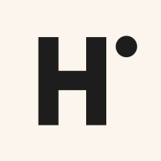
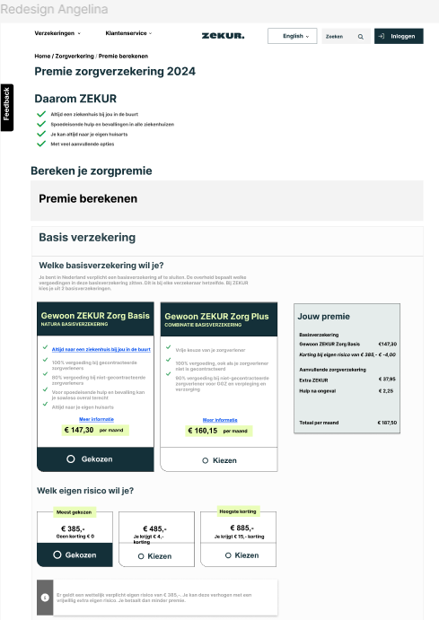

Hike One
Het bedrijf Hike One heeft ons deze opdracht gegeven, om drie zorgverzekeringswebsite te onderzoeken en daar uiteindelijk één website van kiezen en daarmee aan de slag te gaan.
Het doel van dit project is om de flow van de zorgverzekeringswebsite te verbeteren voor een ieder die zijn premie wilt berekenen.

Research
Om te beginnen heb ik alle sites bezocht en gekeken hoe je daar je premie kunt berekenen. De taken waren in ons groepje verdeeld en ik heb de flow van de website “Zilveren Kruis” meer onderzocht en daarna ook twee usertesten bij gedaan. Een jong persoon en een ouder persoon. De doelgroep is voor een zorgverzekeringswebsite heel breed, omdat iedereen in Nederland vanaf 18 jaar een zorgverzekering moet hebben. Dus jonge personen, oudere personen, maar ook mensen met beperkingen, zoals kleurenblindheid. Voor iedereen moet de website toegankelijk zijn om te kunnen gebruiken.
Uit de user testen voor Zilveren Kruis is gebleken dat de leesbaarheid minder is door de kleine lettertype en dat de onderscheid tussen verschillende teksten beter kan. Over het algemeen was het even zoeken in het begin, omdat ze de site voor het eerst zagen, maar daarna is het makkelijk.
Ik heb ook gekeken naar een methode van Nielsen Norman "Heuristic evaluation", die je helpt op belangrijke punten te letten, zoals consistency and standards.
Redesign
Als groep hebben we na de research de website ZEKUR gekozen. Met hun website heb ik ook geusertest. En door naar de pijnpunten te kijken, ben ik aanpassingen gaan brengen voor het re-design in Figma.
Ik heb de pijnpunten van ZEKUR onder elkaar gezet, zoals een terugknop naar de vorige stap of pagina, hoe de opsomming van de bedragen wordt weergegeven.
Uiteindelijk is er een prototype uitgekozen die de verbeteringen het beste liet zien. Met dat design heb ik ook geusertest. De usertest is al veel beter gegaan dan met de originele website van ZEKUR. Er zijn nog een paar aanpassingen gedaan na het usertesten.

Presentatie
Bij de tussen presentatie online was de feedback gegeven om de Nielsen Norman methodes te gebruiken om de research te verbeteren. De Nielsen Normen heb ik daarna ook gebruikt. Het laat je beter nadenken over bepaalde functionaliteiten op een website die de gebruiksvriendelijkheid moet verbeteren.
7 november zijn we naar Hike One gegaan voor de presentaties van ons design. Er is goede feedback gegeven op hoe er is gepresenteerd en hoe we het de volgende keer beter zouden kunnen doen. De volgende keer meer van het prototype laten zien en de verschillen goed benadrukken en laten zien.
 (1).jpg)
Reflectie
Tijdens het Hike One-project heb ik veel geleerd over het uitvoeren van gebruikerstests. Het betrekken van je doelgroep is daarbij essentieel. Doordat ik vaker met gebruikerstests heb gewerkt, heb ik geleerd hoe ik deze beter kan voorbereiden en belangrijke inzichten kan krijgen. Dit is een groot onderdeel voor het proces naar een product dat door anderen gebruikt zal worden. Daarnaast heb ik door gekregen feedback, geleerd hoe ik mijn onderzoek kan verdiepen. Dit doe ik onder andere door gebruik te maken van de methodes van Nielsen Norman.
{kind=link}
{kind=link}